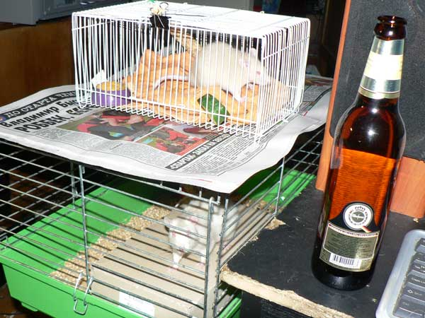
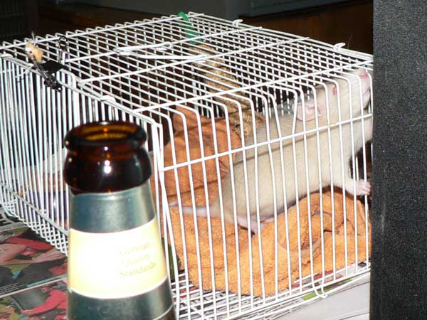
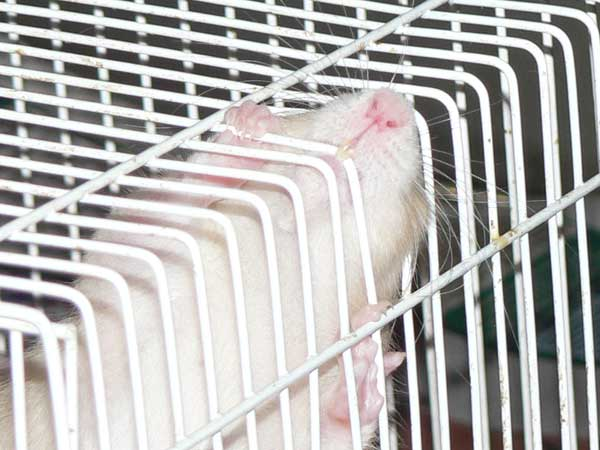
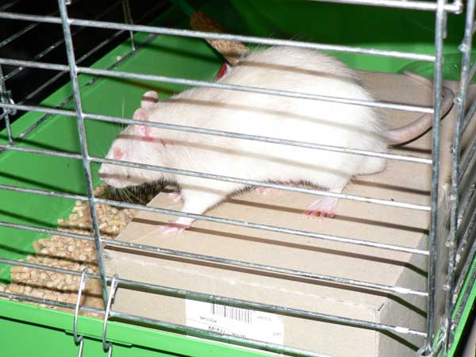
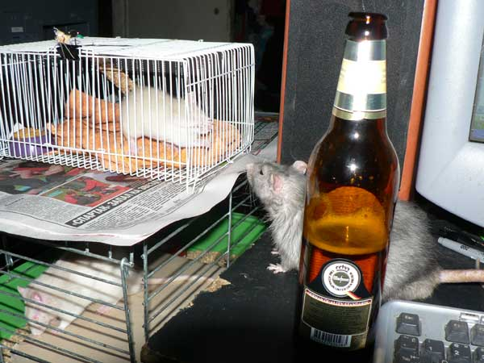
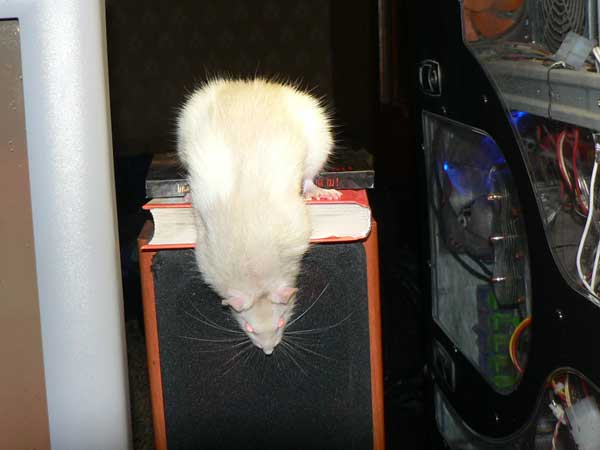
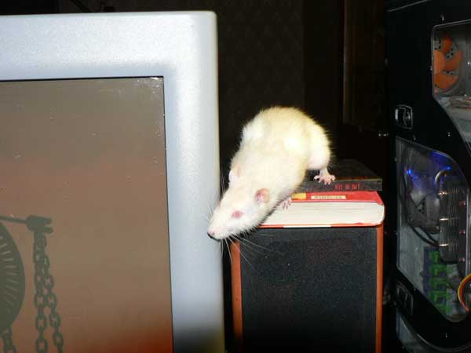
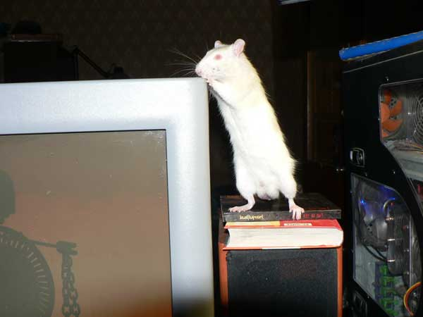

14 мая 2007

Временные жилища. Наверху Эрик в переноске, внизу Партизан в карантинной клетке.

Эрик выгрызается из клетки.

Эрик: — Может, тут прутья легче раздвигаются?

Эрик: — Поднатужусь... Голова почти пролезла!

Эрик: — Не лезет... придется грызть!

Партизан моется.

Вот такого милягу выкинули на улицу.

При вспышке плохо видно, но на спине - шампаневый плащ.

Тимофей пришел знакомиться.

Тимофей: — А ну вас всех. Что я, мелких не видел?

Партизан: — Усы лучше фотографировать на темном фоне.

Партизан: — Ой, а как тут интересно вокруг!

— Приходится вертеться, чтобы все разглядеть.

— А на экране что?

— Сверху можно прогуляться?